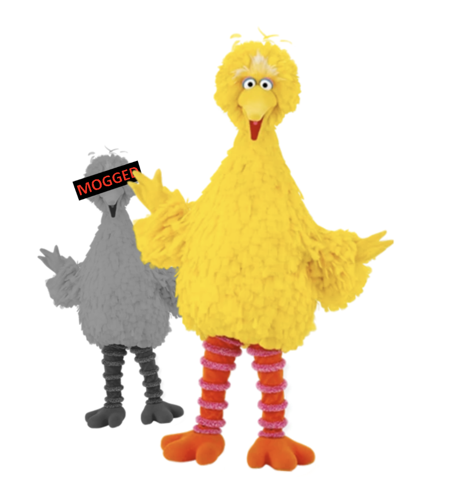
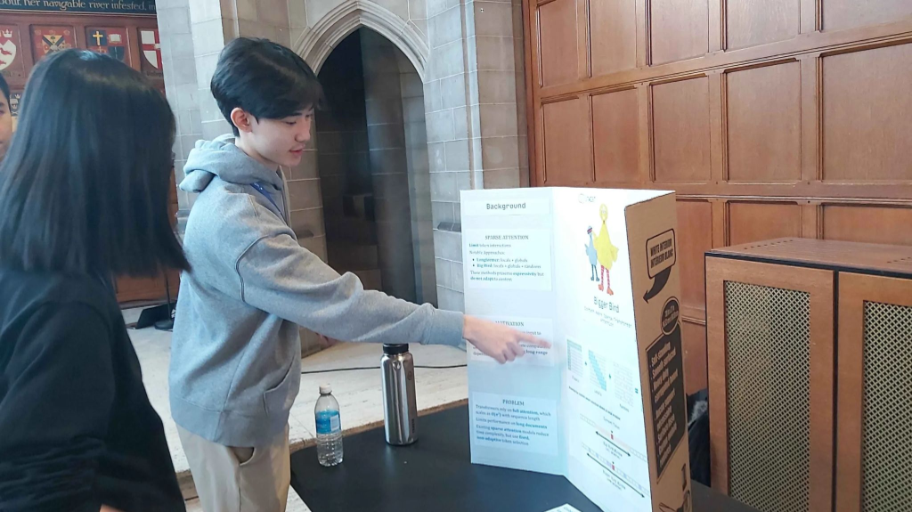
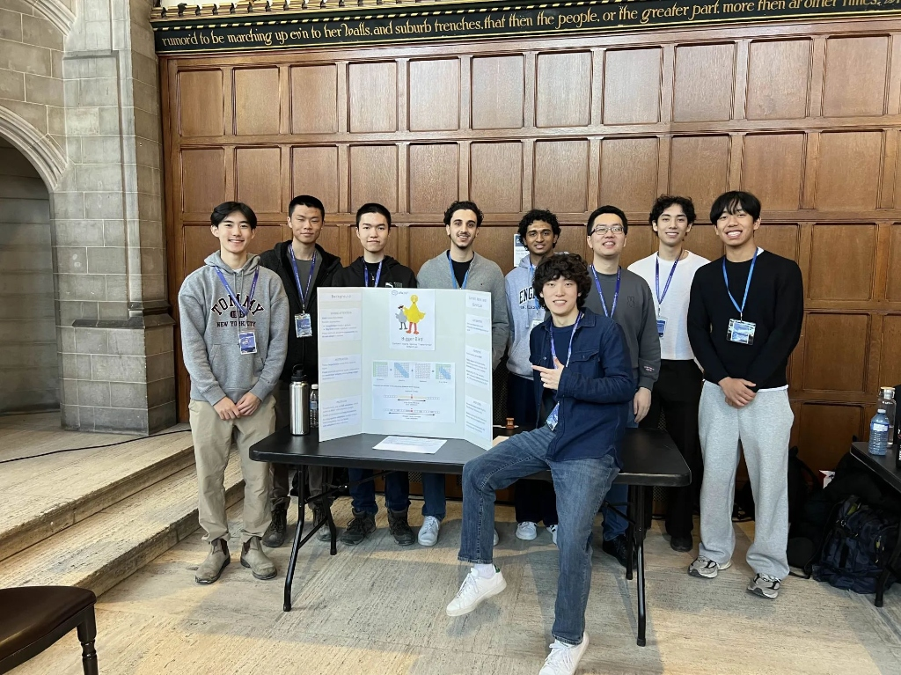

Bigger Bird
Content-aware sparse attention: dense-level long-context retrieval, linear scaling
Where it started

UTMIST DevCon, Feb 7 2026: explaining the original proposal

The Bigger Bird team, one of 30+ UTMIST projects at DevCon
Feb 2026First meeting; content-aware attention proposal
Feb 7DevCon booth talk
Feb 11Project officially begins
Spring–Sep19 sparse-attention experiments; 8 cluster R&D rounds
Oct 2Bigger Bird v3 on H100s: dense-level retrieval at 128K
The problem: attention is quadratic
Every token compares itself with every earlier token.
8 billion
token pairs per head, per layer, for one 128K-token prompt
Goal: near-linear cost while keeping the model's ability to find information in long documents.
The idea: each token reads only what matters
Big Bird uses fixed patterns. Bigger Bird picks keys by content:
| Big Bird | Bigger Bird v3 |
|---|
| Global tokens | first 64 tokens (attention sinks) + 512 key columns per head chosen by the question |
| Local window | previous 16,384 tokens, exact |
| Random links | replaced by content-routed long-range links |
| — | new: the final 256 tokens (the question) read everything |
Cost per layer, prompt of n tokens
Dense: every token × every earlier token ≈ n²/2
Bigger Bird: every token × ~17K keys + 256 question tokens × n ≈ 17K·n
→ linear in n. All 32 layers are sparse.
Frozen DeepSeek-R1-Distill-Llama-8B: no training or fine-tuning. One Triton GPU kernel.
How we test it: "needle in a haystack"
Hide one fact in a very long document, then ask for it. If the attention shortcut skips the fact, the model can't answer.
The grass is green. The sky is blue. The sun is yellow. Here we go. There and back again.
A quick brown fox jumps over the lazy dog. Pack my box with five dozen liquor jugs. …
( ~60,000 tokens of filler )
… How vexingly quick daft zebras jump. The special magic golden-falcon is: 7606921. The five boxing wizards jump quickly. …
( ~60,000 more tokens of filler )
… We promptly judged antique ivory buckles for the next prize. What is the special magic golden-falcon? The answer is:
Correct output: 7606921. The needle can sit anywhere (its depth: 0.1 = near the start, 0.9 = near the end); the question is always last.
How we score and time it
1
Same prompts
Dense and Bigger Bird see exactly the same prompts, token for token. Prompt sizes from 8K to ~127K tokens; the model's limit is 128K.
2
Exact answer
The model writes up to 10 tokens. Correct only if the full 7-digit number appears. Last-digit or partial matches don't count.
3
Prefill time
Time for the model to read the whole prompt once, the part attention makes expensive. Measured on one H100 after warm-up.
4
Held-out check
Settings tuned on 6 prompts; confirmed on 24 more prompts the tuning never saw.
Baseline: the same model with standard dense FlashAttention. Greedy decoding, BF16, KV cache on.
Before today: everything broke at 128K
| Approach (8 cluster R&D rounds) | ~65K | ~127K |
|---|
| Dense attention | 6/6 | 6/6 |
| Previous Bigger Bird (exp 19, sqrt spans) | 6/6 | 0/6 |
| DeepSeek-style Top-K | — | 0/6 |
| 4× bigger routing budget (16K keys) | — | 1/3 |
| Top-K + first 16 layers dense | — | 6/6 (still quadratic) |
- Even forcing the answer into every sparse layer still failed.
- So "find the needle better" was the wrong fix. Something else was going wrong.
- Each 128K run took hours on shared 3g.40GB GPU slices. We moved to full H100s (Modal), where it's ~16 s and 10 run at once.
Diagnosis: the middle of the document was getting blurry
- For each of the 32 layers we compared each shortcut's output with real attention (1.0 = identical).
- Old routing: ~0.85 for tokens in the middle of the prompt.
- Small errors compound over 32 layers. Fine at 65K, broken at 128K.
- Wide local window + content-routed columns: 0.95+.
What mattered (each change tested on the same 6 prompts @127K)
- Let the question read everything: 2/6 → 6/6. Cheap, because the question is only 256 tokens.
- Fewer routed columns are better: 512 → 6/6, 4,096 → 0/6. Too many question-chosen keys confuse the rest of the document.
- Wider local window (4K → 16K) fixed needles near the start of the document.
Result at ~127K tokens (30 prompts each)
30/30
correct, needle in the middle
dense: 28/30
30/30
correct, needle near the start
dense: 28/30
1.9×
faster prefill
8.6 s vs 16.3 s
Same accuracy as dense: a 2-prompt gap at n=30 is noise, so this is parity, not a win.
Speed vs document length

| prompt | dense | Bigger Bird (4K window) | Bigger Bird (16K window, final) |
|---|
| ~32K tokens | 1.70 s | 1.52 s (1.1×) | 2.13 s (0.8×) |
| ~65K tokens | 5.03 s | 3.11 s (1.6×) | 4.35 s (1.2×) |
| ~127K tokens | 16.22 s | 6.12 s (2.65×) | 8.50 s (1.9×) |
Measured: linear, not quadratic
On a log-log plot the slope is the growth rate: 1 = linear, 2 = quadratic.
- Dense: 1.65, heading toward 2 as documents grow.
- Bigger Bird: 1.01. Double the document, double the time.
- Under ~32K tokens the rest of the model dominates, so sparse attention doesn't help there.
Looking ahead: one attention layer at up to 1 million tokens
- 1M tokens: 18.4 s → 1.0 s (17.8× faster).
- 512K: 8.7×. 256K: 4.2×. The gap widens with every doubling.
- Speed only, on synthetic data with the real model's shapes. The model reads at most 128K tokens, so accuracy past that is untested.
Does it matter where the needle is hidden?
- Depth 0.1 = needle near the start (hardest: ~115K tokens between needle and question).
- 4K window: 2/6 at depths 0.1 and 0.25.
- 16K window (final): 6/6 everywhere except 5/6 at 0.9, where dense also gets 5/6.
Harder versions of the test
Essay haystack
Filler is real-sounding essay text instead of repeated pangrams. Harder to tell the needle from the filler.
Multi-key
4 needles with different keys (golden-falcon, azure-comet, …). Ask for one. Distractors look like the answer.
Multi-value
The same key appears 4 times with 4 numbers. All 4 must be listed.
Multi-query
Ask for 4 different keys in one question. All 4 answers must be found.
… The special magic violet-thistle is: 3201885. … The special magic violet-thistle is: 7474932. … (2 more) …
What are all values for the special magic violet-thistle? The answer is:
Bigger Bird: 3201885, 7474932, 1236801, 3579629 Dense: 3201885. (stopped after one)
Recall = fraction of the correct values found. None of these tasks were used for tuning.
Harder tasks: matches dense, slightly ahead at 65K

- Up to ~65K tokens Bigger Bird matches or beats dense on every variant. At 65K: multi-key 11/12 vs 9/12; multi-value 6/12 vs 3/12.
- Every prompt where the two disagreed went to Bigger Bird (5–0), but 12 prompts per task isn't enough to call it significant (p ≈ 0.06).
- At ~127K these are hard even for dense (multi-key 4/12). On the essay haystack Bigger Bird trails: 11/24 vs 17/24.
Honest limits
- Synthetic tests: needle-in-a-haystack variants, one model, one random seed. Not the official RULER suite or real-world QA yet.
- Essay text at 127K: Bigger Bird trails dense (11/24 vs 17/24). Our tuning sweeps didn't close the gap.
- Routing looks at the question first: key choice uses the end of the prompt, so it suits "read a document, then answer". It is not streaming attention.
- Memory unchanged: the KV cache still stores every token. The savings are in compute.
- Short prompts: no speedup below ~32K tokens.
Next steps
- Close the 127K natural-text gap: per-chunk routing, or light sparse-aware fine-tuning.
- Real tasks: LongBench-v2, multi-hop QA, code; more seeds and models (e.g. Llama-3.1-8B).
- Past 128K: test accuracy on a model with a longer context limit, where the 4–18× attention speedups apply.
- Faster kernel: native sliding-window FlashAttention for the 16K window; fuse the question tail.
- Streaming version: routing that only looks backwards, for chat and cached generation.
Thank you
Questions? · Code and results: modal_rd/ in the Bigger Bird repo